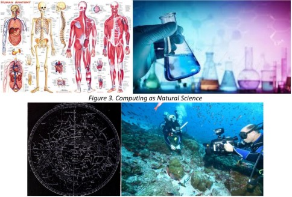
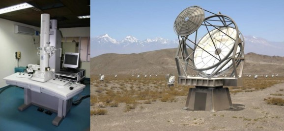

Computing and Formal Science
Computing is a formal science. It is an area of study that uses mathematically definable logic systems to generate a result. Since the advent of computer technology, formal sciences have benefited from it. For example:
- Calculators
- Spreadsheet
- Robotics and AI
- Virtual environments
Application of Computing in Formal Science
Computing and Natural Science
A natural science is an area of study that describes, understands, explains,and predicts natural phenomena by observing and experimenting. Natural sciences have also benefited from the developments of the computing industry. For example:
- Electron microscopes
- Computer tomography/CT scans
- Gamma ray telescopes
- Digital sensors

Application of Computing in Natural Science

Computing and Social Science
Social science uses quantitative and qualitative research but focuses on data from the latter. Social research is more eclectic than scientific research. Social sciences have also benefited from the developments of the computing industry. For example:
- Polls and census
- Websites
- Social networks
- Laptops and projectors